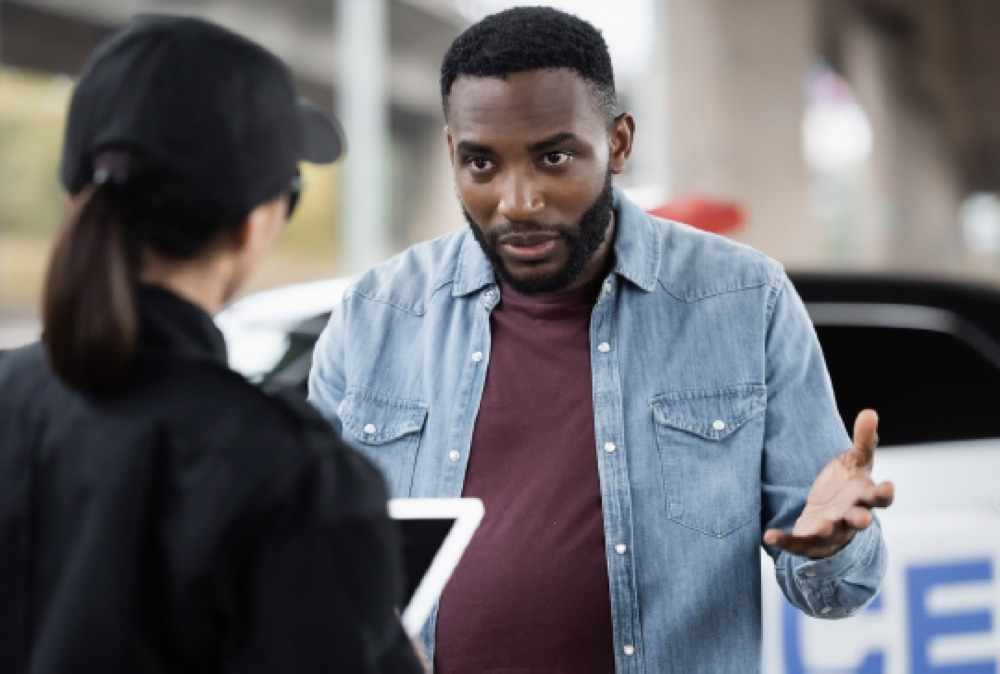

Module 01
The Ideal Traffic Stop
This module puts you in the shoes of a police officer as they approach a driver during a traffic stop. The driver improves his trust with the police officer by taking five important actions. We cover the importance of stopping in a well-lighted place and the need to put on your hazard lights as you pull over. During this time, you are keeping your hands on the steering wheel and making sure the interior lights enable the police to see in your rear compartment.
Module 01
Watch in order